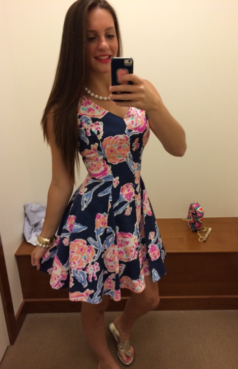

<!-- community tab-->
<!-- shows pictures received from other users of the last 2h
  allows voting on the pictures and sends the votes to the backend-->

<div class="tab-content tab-community">

    <div ui-state="activeTab" default="1" class="tabs-wrapper">
        <ul class="nav nav-tabs">
            <li ui-class="{'active': activeTab == 1}">
                <a ui-set="{'activeTab': 1}" ng-click="indicatorMargin = 0">Friends</a>
            </li>
            <li ui-class="{'active': activeTab == 2}">
                <a ui-set="{'activeTab': 2}" ng-click="indicatorMargin = '50%'">Shops</a>
            </li>
        </ul>

        <div id="community-tab-indicator" ng-style="{'margin-left': indicatorMargin}"></div>

        <div ui-if="activeTab == 1">
            <div class="list-item" ng-click="openDetail(1)">
                <div class="name col-xs-6">Sarah</div>
                <div class="img-wrapper col-xs-6">
                    
                </div>
            </div>
        </div>

        <div ui-if="activeTab == 2">
            <div class="list-item" ng-click="openDetail(1)">
                <div class="name col-xs-6">H&M</div>
                <div class="img-wrapper col-xs-6">
                    
                </div>
            </div>
        </div>
    </div>

</div>
